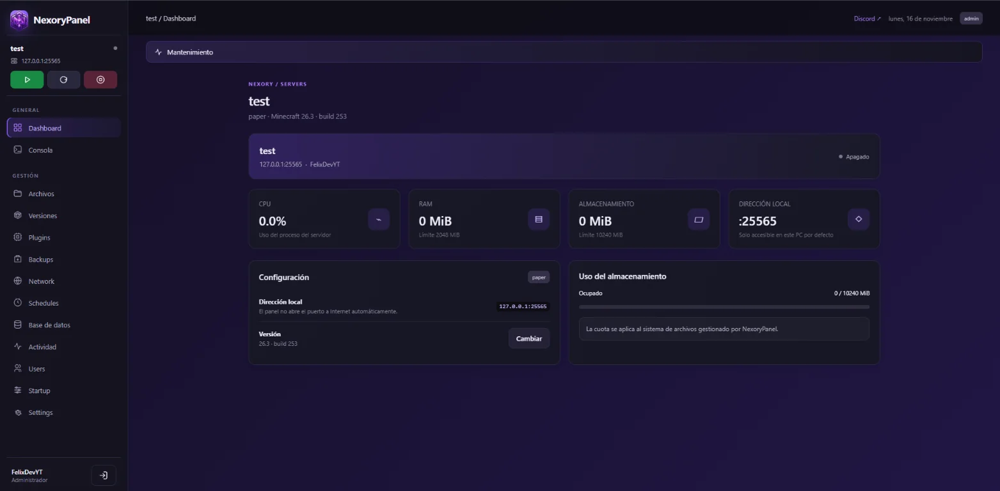
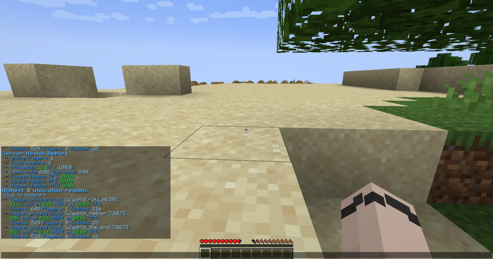

01 / CONTROL
La consola, siempre cerca
Consulta actividad y gestiona el estado del servidor desde la misma ventana que usas para los ajustes.
INFO Done (4.82s)! Type "help" for help.
Todo lo que necesitas para administrar tu servidor Minecraft Java, en un panel local hecho para que disfrutes construyendo.
Una interfaz compacta para las tareas de cada día, desde el primer arranque hasta el próximo backup.
Consulta actividad y gestiona el estado del servidor desde la misma ventana que usas para los ajustes.
Crea, mueve, renombra, comprime o edita archivos del servidor con el editor integrado.
Elige Paper, Purpur, Vanilla o Folia y busca versiones disponibles para instalar.
Configura recursos, administra accesos, crea backups y organiza tareas sin perder de vista el estado de cada servidor.
Capturas reales de la aplicación: desde la lista de servidores hasta los controles de tu instancia.


Un flujo sencillo pensado para configurar sin pelearte con herramientas distintas.
NexoryPanel para Windows, a un clic de distancia.
Descargar para Windows Windows 10 / 11 · Ejecutable sin firma digital · Descarga oficial de GitHub SHA-256 del instalador v0.1.0No. Es una aplicación local: el panel y los procesos de servidor se ejecutan en tu propio equipo Windows.
Java compatible con la versión de Minecraft que quieras ejecutar. El panel gestiona el proceso local, pero no instala Java por ti.
NexoryPanel continúa en desarrollo. Consulta las notas de cada versión y el README de GitHub para conocer funciones y limitaciones actuales.
En el directorio de datos local de NexoryPanel, junto a la aplicación. Mantén una copia de ese directorio si necesitas conservar la configuración y los mundos.